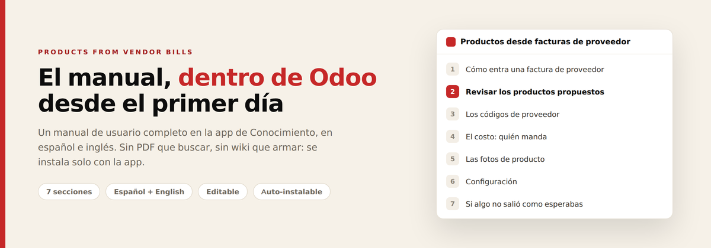

A complete, task-oriented user manual for Products from Vendor Bills, delivered straight into the Knowledge app — ready to read the day the app is installed.
This is a small companion module. It installs itself automatically when both Products from Vendor Bills and Odoo’s Knowledge app are present, and adds the manual as an ordinary Knowledge article you can read, edit, share or print. If you do not use Knowledge, this module simply stays uninstalled and the main app works exactly the same.
The manual is written in English and Spanish. On installation it is created in the language of your main company, so your team reads it in the language they already work in. It is a normal article afterwards — translate it, add your own house rules, or reorganise it however you like.
Created once, never overwritten. The manual is generated the first time the module installs. Your later edits are yours — upgrades and reinstalls never clobber them.
Requires Products from Vendor Bills and Odoo Knowledge (Enterprise). Odoo 19.0.
Support: soporte@xubax.com · www.xubax.com